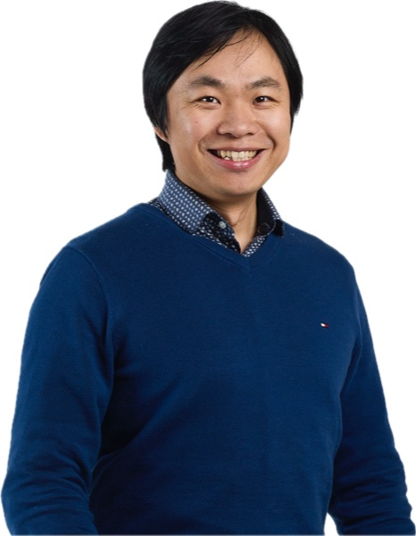

Independent, evidence-led advisory.
ByteMind is a boutique consulting firm for professional service firms and industry bodies. We apply academic research standards to commercial decisions.
Three principles, applied to every engagement.
Evidence first
Every recommendation is grounded in data, official sources, and peer-reviewed research — never guesswork.
Plain language
Complex analysis, delivered as clear, actionable briefs your team can actually use.
Independence
No vendor, platform, or institutional ties — our advice is free of commercial bias.
About the Founder
ByteMind was founded to bring academic evidence into everyday business decisions.

Dr Yuqian Michael Zhang — Founder & Director
Dr Zhang is a senior academic at a New Zealand university and a CPA Australia member. His research and published briefs span digital transformation, artificial intelligence, financial reporting, and cross-border business.
He founded ByteMind to serve professional bodies and enterprises across New Zealand, Australia, and the Asia-Pacific with the same analytical standards he applies in research.
PhD · CPA Australia · Senior academic, New Zealand university
Institutional Engagement
We work with professional bodies on research, training, and advisory services grounded in academic rigour.
Commissioned Research & Content
Market research, benchmarking, CPD content, and policy briefs built on the same evidence standard as our public work.
Academic–Industry Bridge
Current academic thinking, translated into practical advice. Every engagement is grounded in data and evidence.
Our Work Is Public
Rather than take our word for it, read the analysis, check the data, and see the standard for yourself.